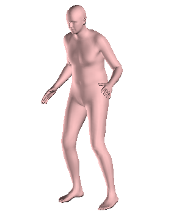
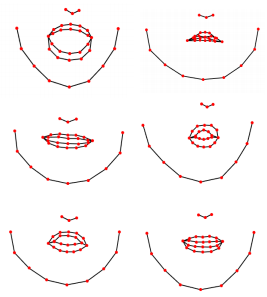
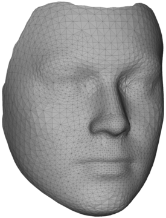
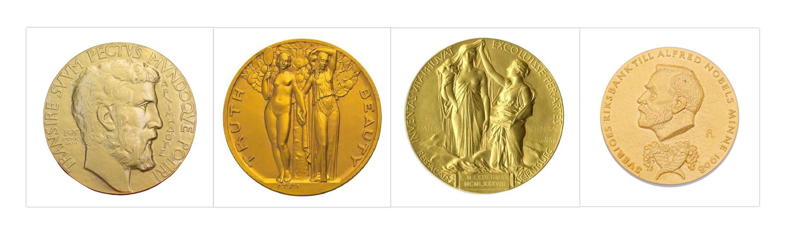
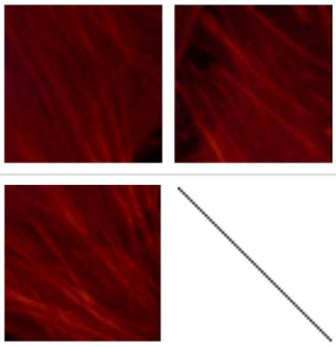
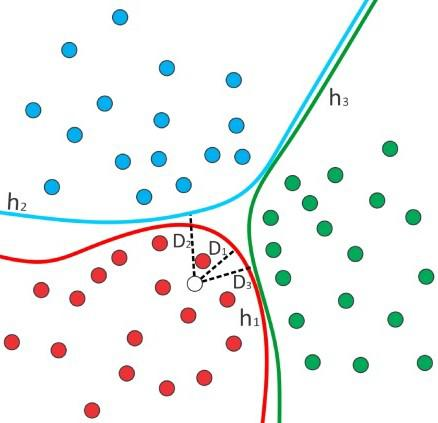
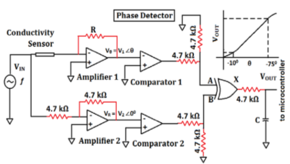
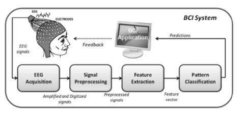
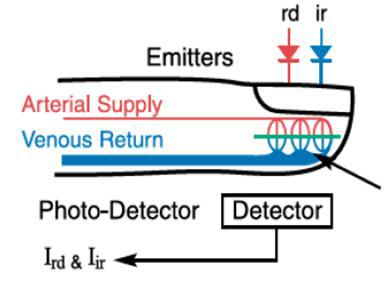

Sorted list of Projects
Academic
|  |
3D Reconstruction of Human pose from a single 2D image.
Hasanth Palanchu. [Link][Code] Using the keypoints technique used in facial reconstruction techniques we try to reconstruct the human pose from single 2D single image using the Morphable Model of Michael Blank's UP model by exploring in principal component directions and minimize the difference between projected and actual keypoints with a technique of non-linear least squares problem resulting in 3D reconstruction of the image. |
|  |
Voice to Face mapping.
Hasanth Palanchu. [Link][Code] We train the model on voice phenomes and keypoints positions in the jaw section of a human in the image. Given input voice to the learned model and image the learned deep learning model would estimate the variant of the image based on the voice in a particular instant of time. The learning is done using a sliding window approach. |
|  |
3D Face reconstuction from 2D image using University of Surrey Morphable Model.
Hasanth Palanchu. [Link][Code] Using 38 keypoints we match the facial points with the corresponding 3D points in Morphable Model which is adjusted based on the difference between distances of projected 3D points on to the image plane and 2D keypoints and outputs the adjusted morphable model along principal component directions. |
Non-Academic
|  |
Variational Bayesian Matrix Factorization of Bounded Support Data
Hasanth Palanchu, Prof. Anirban Mukherjee. [PDF][Link][Code] In this project we try to apply the matrix factorization techniques for source separation,missing data estimation. By assuming the data in accordance of a couple of bounds: the distribution of the data, we apply variational theory to obtain the estimate of intractable soultion at the beginning. |
|  |
Measurement of fiber angular orientation distributions of the objects in the images
Hasanth Palanchu, Prabhat Yeluri, Prof. Debdoot Sheet. [PDF][Code] In this experiment we took inspiration from the image processing techniques used in metallurgical studies in order to perform the estimation of orientation of lung fibres from the images. We transform the image to fourier space and try to figure the dominating direction of lung fibres. |
|  |
Modelling the Transitions in Lung cancer cells and classification of different cells using Deep Belief Networks
Hasanth Palanchu, Prof. Anirban Mukherjee. [Link][Code] The progression of cancer cells happens in various different stages, we try to predict the different stages of lung cancer cells from images and output the respective counts of different staged cells. we try to use some feature like packing density, length & diagnol length of cells etc. as features and using the popular technique of Deep Belief Networks, we perform the multi-class classification. |
|  |
Design and Construction of a low cost Digital PH-meter using constant phase element as sensor
Hasanth Palanchu, Prof. Karabi Biswas. [PDF][Link] Designed and constructed a low cost PH-meter from scratch using Operational-Amplifiers and Logic gates(for condition- ing the output of sensing element, PMMA, DQN-70 coated probes. |
|  |
Feature extraction and selection techniques for Binary Classification problem of Right half and Left half brain activity based on EEG signals
Hasanth Palanchu, Prof. Manjunatha Mahadevappa. [PDF][Link] In this experiment we tried to classify the Left & Right Brain activity with the help of EEG signals captured. We experimented with different kinds of Feature Extraction techniques on these signals obtained from various channels eventually classifying the activity based on the EEG signals of various samples activities - Sleeping, Reading, Watching etc. |
|  |
Analog circuit design for Measuring Heart Rate and Blood flow rate - Plethysmography
Hasanth Palanchu, Prof. Saswat Chakrabarti. [Link] We designed and implemented a system which can measure the Heart & Blood flow rates. Using a photo-detector cascaded by a bandpass filter circuit. We capture the varition in the light intensity and sense the variations with the help of detector. |